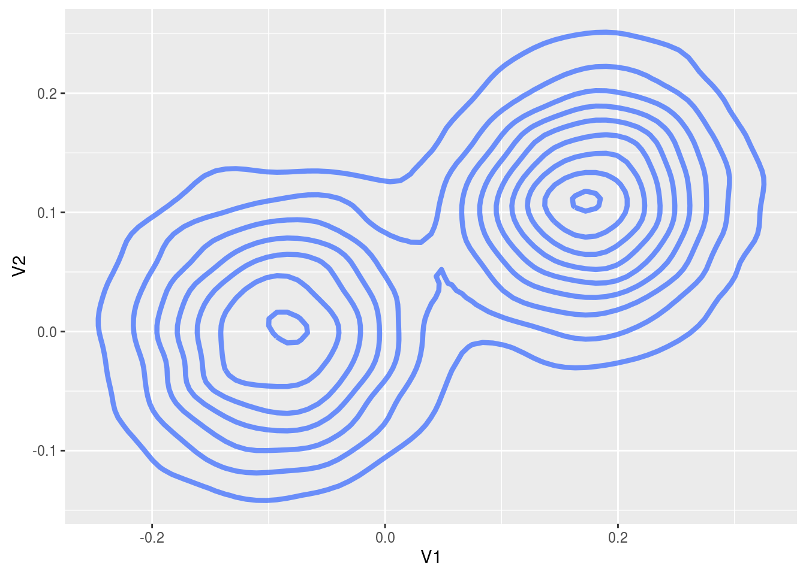

In this example we use the package to infer the modes of a bimodal, 2d Gaussian using stochastic gradient Hamiltonian Monte Carlo. So we assume we have independent and identically distributed data \(x_1, \dots, x_N\) with \(X_i | \theta \sim 0.5 N( \theta_1, I_2 ) + 0.5 N( \theta_2, I_2 )\), and we want to infer \(\theta_1\) and \(\theta_2\).
First, let’s simulate the data with the following code, we set \(N\) to be \(10^4\)
library(sgmcmc)
library(MASS)
# Declare number of observations
N = 10^4
# Set locations of two modes, theta1 and theta2
theta1 = c( 0, 0 )
theta2 = c( 0.1, 0.1 )
# Allocate observations to each component
z = sample( 2, N, replace = TRUE, prob = c( 0.5, 0.5 ) )
# Predeclare data matrix
X = matrix( rep( NA, 2*N ), ncol = 2 )
# Simulate each observation depending on the component its been allocated
for ( i in 1:N ) {
if ( z[i] == 1 ) {
X[i,] = mvrnorm( 1, theta1, diag(2) )
} else {
X[i,] = mvrnorm( 1, theta2, diag(2) )
}
}
dataset = list("X" = X)In the last line we defined the dataset as it will be input to the relevant sgmcmc function. A lot of the inputs to functions in sgmcmc are defined as lists. This improves flexibility by enabling models to be specified with multiple parameters, datasets and allows separate tuning constants to be set for each parameter. We assume that observations are always accessed on the first dimension of each object, i.e. the point \(x_i\) is located at X[i,] rather than X[,i]. Similarly the observation \(i\) from a 3d object Y would be located at Y[i,,].
The parameters are declared very similarly, but this time the value associated with each entry is its starting point. We have two parameters theta1 and theta2, which we’ll just start from the true values for the sake of demonstration purposes
params = list( "theta1" = c( 0, 0 ), "theta2" = c( 0.1, 0.1 ) )Now we’ll define the functions logLik and logPrior. It should now become clear why the list names come in handy. The function logLik should take two parameters as input: params and dataset. These parameters will be lists with the same names as those you defined for params and dataset earlier. There is one difference though, the objects in the lists will have automatically been converted to TensorFlow objects for you. The params list will contain TensorFlow tensor variables; the dataset list will contain TensorFlow placeholders. The logLik function should take these lists as input and return the value of the log likelihood as a tensor at point params given data dataset. The function should do this using TensorFlow operations, as this allows the gradient to be automatically calculated; it also allows the wide range of distribution objects as well as matrix operations that TensorFlow provides to be taken advantage of. A tutorial of TensorFlow for R is beyond the scope of this article, for more details we refer the reader to the website of TensorFlow for R. With this in place we can define the log-likelihood function logLik as follows
logLik = function( params, dataset ) {
# Declare Sigma (assumed known)
SigmaDiag = c(1, 1)
# Declare distribution of each component
component1 = tf$contrib$distributions$MultivariateNormalDiag( params$theta1, SigmaDiag )
component2 = tf$contrib$distributions$MultivariateNormalDiag( params$theta2, SigmaDiag )
# Declare allocation probabilities of each component
probs = tf$contrib$distributions$Categorical(c(0.5,0.5))
# Declare full mixture distribution given components and allocation probabilities
distn = tf$contrib$distributions$Mixture(probs, list(component1, component2))
# Declare log likelihood
logLik = tf$reduce_sum( distn$log_prob(dataset$X) )
return( logLik )
}So this function basically states that our log-likelihood function is \(\sum_{i=1}^N \log \left[ 0.5 \mathcal N( x_i | \theta_1, I_2 ) + 0.5 \mathcal N( x_i | \theta_2, I_2 ) \right]\), where \(\mathcal N( x | \mu, \Sigma )\) is a Gaussian density at \(x\) with mean \(\mu\) and variance \(\Sigma\). Most of the time just specifying the constants in these functions, such as SigmaDiag, as R objects will be fine. But there are sometimes issues when these constants get automatically converted to tf$float64 objects by TensorFlow rather than tf$float32. If you run into errors involving tf$float64 then force the constants to be input as tf$float32 by using SigmaDiag = tf$constant( c( 1, 1 ), dtype = tf$float32 ).
Next we want to define our log-prior density, which we assume is uninformative \(\log p( \theta ) = \log \mathcal N(\theta | 0,10I_2)\). Similar to the log-likelihood function, the log-prior density is defined as a function, but only with input params. In our case the definition is
logPrior = function( params ) {
# Declare hyperparameters mu0 and Sigma0
mu0 = c( 0, 0 )
Sigma0Diag = c(10, 10)
# Declare prior distribution
priorDistn = tf$contrib$distributions$MultivariateNormalDiag( mu0, Sigma0Diag )
# Declare log prior density and return
logPrior = priorDistn$log_prob( params$theta1 ) + priorDistn$log_prob( params$theta2 )
return( logPrior )
}Finally we set the tuning parameters for SGHMC, this is a list with the same names as the params list you defined earlier, and values are the stepsize for that parameter.
stepsize = list( "theta1" = 5e-6, "theta2" = 5e-6 )Optionally, we can set the tuning parameter for the momentum alpha in the same way as the stepsize. But we’ll leave this along with the trajectory tuning constant L, and the minibatchSize as their defaults.
Now we can run our SGHMC algorithm using the sgmcmc function sghmc, which returns a list of Markov chains for each parameter as output. Use the argument verbose = FALSE to hide the output of the function. We’ll set the number of iterations as 11000 to allow for 1000 iterations of burn-in.
chains = sghmc( logLik, dataset, params, stepsize, logPrior = logPrior, nIters = 11000 )##
## Simulating from SGMCMC algorithm...## Iteration: 100 Log posterior estimate: -27898.220703125## Iteration: 200 Log posterior estimate: -28397.646484375## Iteration: 300 Log posterior estimate: -28891.265625## Iteration: 400 Log posterior estimate: -30231.375## Iteration: 500 Log posterior estimate: -28383.78125## Iteration: 600 Log posterior estimate: -27462.3984375## Iteration: 700 Log posterior estimate: -27211.01953125## Iteration: 800 Log posterior estimate: -28046.37109375## Iteration: 900 Log posterior estimate: -26568.28125## Iteration: 1000 Log posterior estimate: -29347.169921875## Iteration: 1100 Log posterior estimate: -29110.6171875## Iteration: 1200 Log posterior estimate: -28252.0625## Iteration: 1300 Log posterior estimate: -28292.48828125## Iteration: 1400 Log posterior estimate: -28722.23828125## Iteration: 1500 Log posterior estimate: -30111.7890625## Iteration: 1600 Log posterior estimate: -28761.46484375## Iteration: 1700 Log posterior estimate: -29552.046875## Iteration: 1800 Log posterior estimate: -28317.724609375## Iteration: 1900 Log posterior estimate: -29251.26953125## Iteration: 2000 Log posterior estimate: -28738.201171875## Iteration: 2100 Log posterior estimate: -28733.7734375## Iteration: 2200 Log posterior estimate: -29898.07421875## Iteration: 2300 Log posterior estimate: -28996.12890625## Iteration: 2400 Log posterior estimate: -27120.02734375## Iteration: 2500 Log posterior estimate: -28812.74609375## Iteration: 2600 Log posterior estimate: -28357.478515625## Iteration: 2700 Log posterior estimate: -27905.05078125## Iteration: 2800 Log posterior estimate: -29224.203125## Iteration: 2900 Log posterior estimate: -29587.0390625## Iteration: 3000 Log posterior estimate: -28788.109375## Iteration: 3100 Log posterior estimate: -29621.7734375## Iteration: 3200 Log posterior estimate: -29681.37109375## Iteration: 3300 Log posterior estimate: -26879.76953125## Iteration: 3400 Log posterior estimate: -27705.7421875## Iteration: 3500 Log posterior estimate: -29062.26953125## Iteration: 3600 Log posterior estimate: -28452.861328125## Iteration: 3700 Log posterior estimate: -27150.5703125## Iteration: 3800 Log posterior estimate: -28668.501953125## Iteration: 3900 Log posterior estimate: -30196.6875## Iteration: 4000 Log posterior estimate: -27589.60546875## Iteration: 4100 Log posterior estimate: -28693.095703125## Iteration: 4200 Log posterior estimate: -28462.513671875## Iteration: 4300 Log posterior estimate: -29225.80078125## Iteration: 4400 Log posterior estimate: -28566.748046875## Iteration: 4500 Log posterior estimate: -29771.1640625## Iteration: 4600 Log posterior estimate: -28656.294921875## Iteration: 4700 Log posterior estimate: -28205.5078125## Iteration: 4800 Log posterior estimate: -28275.10546875## Iteration: 4900 Log posterior estimate: -29652.943359375## Iteration: 5000 Log posterior estimate: -28371.0234375## Iteration: 5100 Log posterior estimate: -28101.814453125## Iteration: 5200 Log posterior estimate: -27775.60546875## Iteration: 5300 Log posterior estimate: -27347.1484375## Iteration: 5400 Log posterior estimate: -28763.375## Iteration: 5500 Log posterior estimate: -28908.318359375## Iteration: 5600 Log posterior estimate: -29166.287109375## Iteration: 5700 Log posterior estimate: -28616.5859375## Iteration: 5800 Log posterior estimate: -27123.45703125## Iteration: 5900 Log posterior estimate: -28726.7109375## Iteration: 6000 Log posterior estimate: -28469.8515625## Iteration: 6100 Log posterior estimate: -27640.5## Iteration: 6200 Log posterior estimate: -27077.162109375## Iteration: 6300 Log posterior estimate: -27898.498046875## Iteration: 6400 Log posterior estimate: -28633.28515625## Iteration: 6500 Log posterior estimate: -28100.392578125## Iteration: 6600 Log posterior estimate: -28575.83203125## Iteration: 6700 Log posterior estimate: -29504.75390625## Iteration: 6800 Log posterior estimate: -28531.1875## Iteration: 6900 Log posterior estimate: -30644.349609375## Iteration: 7000 Log posterior estimate: -26966.56640625## Iteration: 7100 Log posterior estimate: -29688.0078125## Iteration: 7200 Log posterior estimate: -27957.986328125## Iteration: 7300 Log posterior estimate: -28286.74609375## Iteration: 7400 Log posterior estimate: -29542.265625## Iteration: 7500 Log posterior estimate: -29646.828125## Iteration: 7600 Log posterior estimate: -29214.4375## Iteration: 7700 Log posterior estimate: -29032.47265625## Iteration: 7800 Log posterior estimate: -28997.609375## Iteration: 7900 Log posterior estimate: -26659.896484375## Iteration: 8000 Log posterior estimate: -28529.6953125## Iteration: 8100 Log posterior estimate: -27630.53125## Iteration: 8200 Log posterior estimate: -29495.3203125## Iteration: 8300 Log posterior estimate: -29190.65234375## Iteration: 8400 Log posterior estimate: -26398.93359375## Iteration: 8500 Log posterior estimate: -27484.71875## Iteration: 8600 Log posterior estimate: -29529.47265625## Iteration: 8700 Log posterior estimate: -29864.12890625## Iteration: 8800 Log posterior estimate: -28867.6171875## Iteration: 8900 Log posterior estimate: -27242.388671875## Iteration: 9000 Log posterior estimate: -29698.470703125## Iteration: 9100 Log posterior estimate: -25766.6953125## Iteration: 9200 Log posterior estimate: -27037.6953125## Iteration: 9300 Log posterior estimate: -29250.306640625## Iteration: 9400 Log posterior estimate: -28150.697265625## Iteration: 9500 Log posterior estimate: -28479.171875## Iteration: 9600 Log posterior estimate: -27884.328125## Iteration: 9700 Log posterior estimate: -27455.2421875## Iteration: 9800 Log posterior estimate: -29444.75## Iteration: 9900 Log posterior estimate: -28957.591796875## Iteration: 10000 Log posterior estimate: -27446.736328125## Iteration: 10100 Log posterior estimate: -28762.380859375## Iteration: 10200 Log posterior estimate: -29210.357421875## Iteration: 10300 Log posterior estimate: -28243.556640625## Iteration: 10400 Log posterior estimate: -26435.06640625## Iteration: 10500 Log posterior estimate: -27238.8359375## Iteration: 10600 Log posterior estimate: -29403.26171875## Iteration: 10700 Log posterior estimate: -27557.923828125## Iteration: 10800 Log posterior estimate: -28352.041015625## Iteration: 10900 Log posterior estimate: -29562.931640625## Iteration: 11000 Log posterior estimate: -27979.771484375Finally, we’ll plot the results after removing burn-in
library(ggplot2)
# Remove burn in
burnIn = 10^3
chains = list( "theta1" = as.data.frame( chains$theta1[-c(1:burnIn),] ),
"theta2" = as.data.frame( chains$theta2[-c(1:burnIn),] ) )
# Concatenate the two chains for the plot to get a picture of the whole distribution
plotData = rbind(chains$theta1, chains$theta2)
ggplot( plotData, aes( x = V1, y = V2 ) ) +
stat_density2d( size = 1.5, alpha = 0.7 )